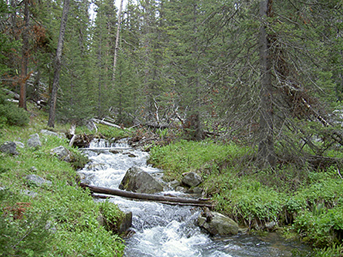

Step Pools
What is it?
Step pools are a series of weir/cross vane structures built at successive elevations that alternate drops in elevation with a vane and a pool habitat. This series of structures is used to connect stream segments with significant changes in elevation and to dissipate stream energy.
 ( photo from Montana State University Watershed Hydrology Laboratory)
Conservation Benefits
- Provides means for fish passage
- Provides instream habitat for fish and other aquatic organisms
- Reduces streambank erosion and channel cutting
What does it include?
Step pools are usually constructed from rock cross vanes built in a series to gradually connect stream segments with different elevations. Location in the stream, maximum size of drop, number of vanes need, and size of rock should be determined by a technical expert. These structures must be properly designed and constructed to prevent them from becoming fish and aquatic organism barriers.
Step Pools Links
Step Pools Bibliography
- Chin. 2005. Toward a theory for step pools in stream channels. Progress in Physical Geography 29: 275-296.
- Purcell et al. 2002. An assessment of a small urban stream restoration project in Northern California. Restoration Ecology 10: 685-694.
- Rosgen. 1997. A geomorphological approach to restoration of incised rivers. Proceedings of the Conference on Management of Landscapes Disturbed by Channel Incision.